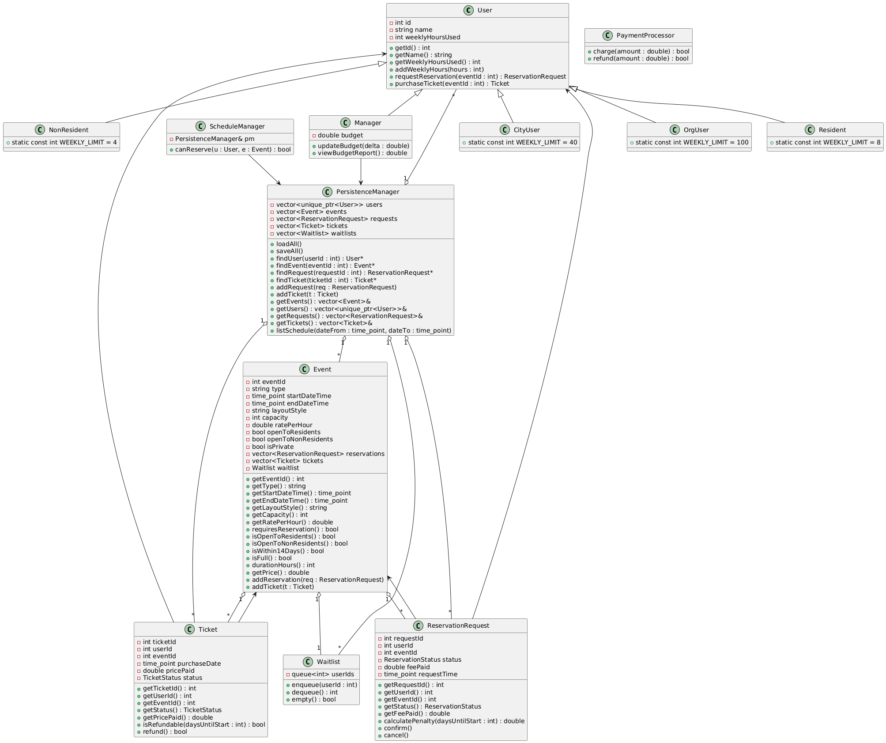
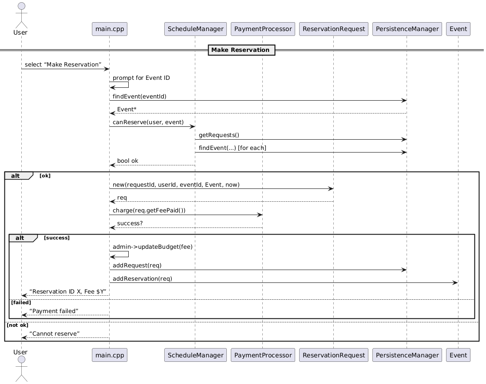
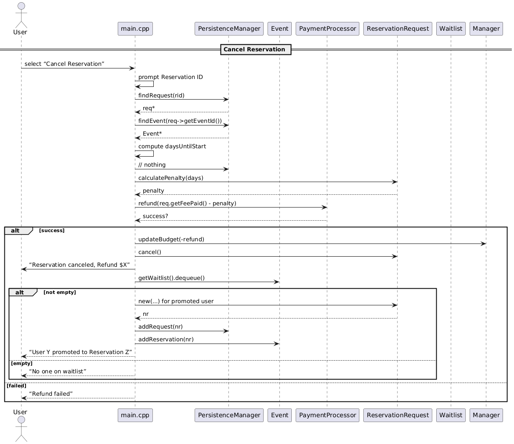
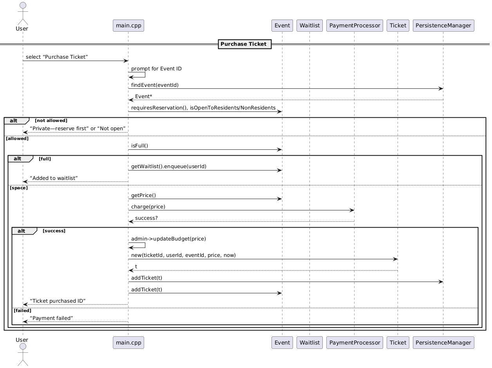

C++模拟购票软件
2025年6月25日
项目概述
本项目是一个面向对象的活动预订管理系统，用于管理社区活动、场馆预订或课程注册等场景。系统采用C++开发，运用了继承、多态、组合等面向对象设计原则，并实现了数据持久化、事务处理和业务逻辑分层。
项目合作者：Cindy Chen
核心功能:
- 用户分类管理: 支持居民、非居民、城市用户、组织用户等多种用户类型
- 活动预订: 完整的预订请求、确认、取消流程
- 等候名单机制: 活动满员时自动加入等候队列，取消时自动晋升
- 退款处理: 根据取消时间计算违约金，自动处理退款
- 预算管理: 管理员可追踪收入、退款和整体预算
设计模式:
- 单一职责原则 (SRP): 每个类专注单一功能(User管理用户信息，Event管理活动，PaymentProcessor处理支付)
- 开闭原则 (OCP): 通过继承扩展新用户类型，无需修改现有代码
- 里氏替换原则 (LSP): 所有User子类可互换使用
- 接口隔离原则 (ISP): 接口方法精简，避免强迫实现不需要的方法
- 依赖倒置原则 (DIP): 依赖抽象User类而非具体实现
- 数据持久化: 管理所有系统数据的加载和保存
- 维护用户、活动、预订请求、门票的向量容器
- 提供查询接口:
findUser(),findEvent(),findRequest() - 实现数据序列化到文件系统
UML类图

时序图
预约流程图

取消预约流程图

购票流程图

项目收获
技术能力:
- 深入理解面向对象编程范式
- 掌握UML建模和系统设计
- 实践设计模式和SOLID原则
- C++内存管理和智能指针应用
软件工程:
- 需求分析和系统架构设计
- 类图和时序图建模
- 模块化设计和接口定义
- 代码组织和项目结构规划
问题解决:
- 复杂业务逻辑的抽象和实现
- 数据一致性保证
- 边界条件和异常处理
- 可扩展性和可维护性权衡